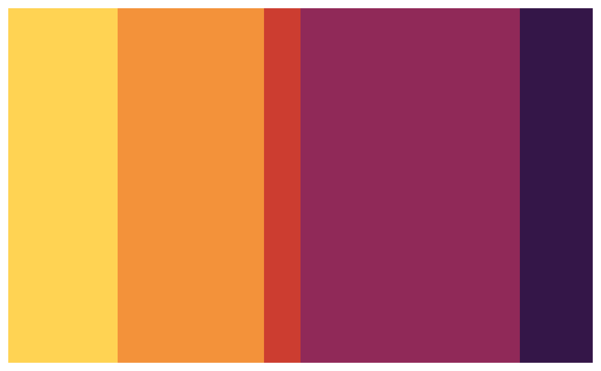
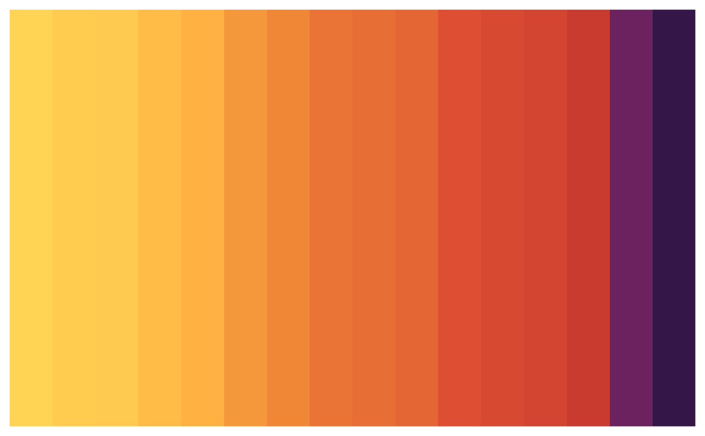
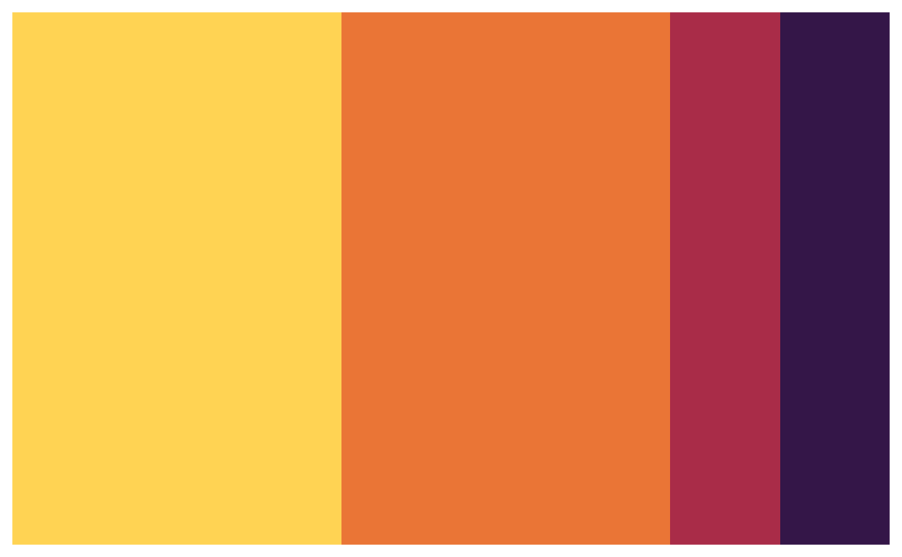
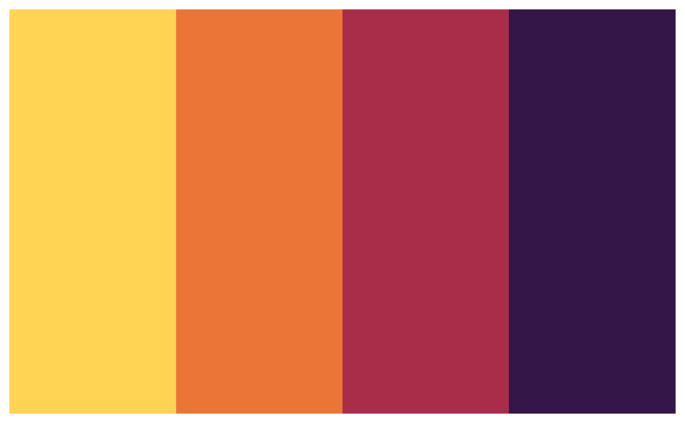

Conveniently maps data values (numeric or factor/character) to colours according to a given colour vector or colour palette.
Usage
pal_numeric(
palette,
domain,
na.color = "#808080",
alpha = FALSE,
reverse = FALSE
)
pal_bin(
palette,
domain,
bins = 7,
pretty = TRUE,
na.color = "#808080",
alpha = FALSE,
reverse = FALSE,
right = FALSE
)
pal_quantile(
palette,
domain,
n = 4,
probs = seq(0, 1, length.out = n + 1),
na.color = "#808080",
alpha = FALSE,
reverse = FALSE,
right = FALSE
)
pal_factor(
palette,
domain,
levels = NULL,
ordered = FALSE,
na.color = "#808080",
alpha = FALSE,
reverse = FALSE
)Arguments
- palette
An object of class
palettes_colourorpalettes_colour.- domain
The possible values that can be mapped.
For
pal_numericandpal_bin, this can be a simple numeric range (e.g.c(0, 100));pal_quantileneeds representative numeric data; andpal_factorneeds categorical data.If
NULL, then whenever the resulting colour function is called, thexvalue will represent the domain. This implies that if the function is invoked multiple times, the encoding between values and colours may not be consistent; if consistency is needed, you must provide a non-NULLdomain.- na.color
The colour to return for
NAvalues. Note thatna.color = NAis valid.- alpha
Whether alpha channels should be respected or ignored. If
TRUEthen colors without explicit alpha information will be treated as fully opaque.- reverse
Whether the colours in
paletteshould be used in reverse order. For example, if the default order of a palette goes from blue to green, thenreverse = TRUEwill result in the colors going from green to blue.- bins
Either a numeric vector of two or more unique cut points or a single number (greater than or equal to 2) giving the number of intervals into which the domain values are to be cut.
- pretty
Whether to use the function
pretty()to generate the bins when the argumentbinsis a single number. Whenpretty = TRUE, the actual number of bins may not be the number of bins you specified. Whenpretty = FALSE,seq()is used to generate the bins and the breaks may not be "pretty".- right
parameter supplied to
base::cut(). See Details- n
Number of equal-size quantiles desired. For more precise control, use the
probsargument instead.- probs
See
stats::quantile(). If provided, thenargument is ignored.- levels
An alternate way of specifying levels; if specified, domain is ignored
- ordered
If
TRUEanddomainneeds to be coerced to a factor, treat it as already in the correct order
Value
A function that takes a single parameter x; when called with a
vector of numbers (except for pal_factor, which expects
factors/characters), #RRGGBB colour strings are returned (unless
alpha = TRUE in which case #RRGGBBAA may also be possible).
Details
pal_numeric is a simple linear mapping from continuous numeric
data to an interpolated palette.
pal_bin also maps continuous numeric data, but performs
binning based on value (see the base::cut() function). pal_bin
defaults for the cut function are include.lowest = TRUE and
right = FALSE.
pal_quantile similarly bins numeric data, but via the
stats::quantile() function.
pal_factor maps factors to colours. If the palette is
discrete and has a different number of colours than the number of factors,
interpolation is used.
Examples
pal <- pal_bin(met_palettes$Tam, domain = 0:100)
plot(as_colour(pal(sort(runif(16, 0, 100)))))

# Exponential distribution, mapped continuously
pal <- pal_numeric(met_palettes$Tam, domain = NULL)
plot(as_colour(pal(sort(rexp(16)))))

# Exponential distribution, mapped by interval
pal <- pal_bin(met_palettes$Tam, domain = NULL, bins = 4)
plot(as_colour(pal(sort(rexp(16)))))

# Exponential distribution, mapped by quantile
pal <- pal_quantile(met_palettes$Tam, domain = NULL)
plot(as_colour(pal(sort(rexp(16)))))

# Categorical data; by default, the values being coloured span the gamut...
pal <- pal_factor(met_palettes$Java, domain = NULL)
plot(as_colour(pal(LETTERS[1:5])))
 # ...unless the data is a factor, without droplevels...
pal <- pal_factor(met_palettes$Java, domain = NULL)
plot(as_colour(pal(factor(LETTERS[1:5], levels = LETTERS))))
# ...or the domain is stated explicitly.
pal <- pal_factor(met_palettes$Java, domain = NULL, levels = LETTERS)
plot(as_colour(pal(LETTERS[1:5])))
# ...unless the data is a factor, without droplevels...
pal <- pal_factor(met_palettes$Java, domain = NULL)
plot(as_colour(pal(factor(LETTERS[1:5], levels = LETTERS))))
# ...or the domain is stated explicitly.
pal <- pal_factor(met_palettes$Java, domain = NULL, levels = LETTERS)
plot(as_colour(pal(LETTERS[1:5])))